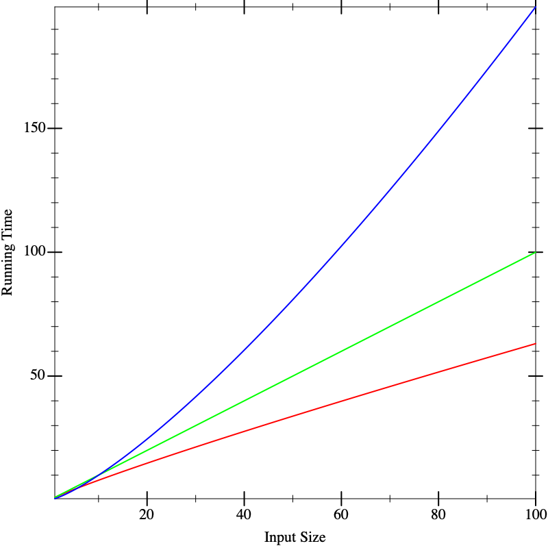

14 Predicting Growth
14.5 The Tabular Method for Singly-Structurally-Recursive Functions |
We will now commence the study of determining how long a computation takes. We’ll begin with a little (true) story.
14.1 A Little (True) Story
My student Debbie recently wrote tools to analyze data for a startup. The company collects information about product scans made on mobile phones, and Debbie’s analytic tools classified these by product, by region, by time, and so on. As a good programmer, Debbie first wrote synthetic test cases, then developed her programs and tested them. She then obtained some actual test data from the company, broke them down into small chunks, computed the expected answers by hand, and tested her programs again against these real (but small) data sets. At the end of this she was ready to declare the programs ready.
The company was rightly reluctant to share the entire dataset with outsiders, and in turn we didn’t want to be responsible for carefully guarding all their data.
Even if we did get a sample of their data, as more users used their product, the amount of data they had was sure to grow.
Debbie was given 100,000 data points. She broke them down into input sets of 10, 100, 1,000, 10,000, and 100,000 data points, ran her tools on each input size, and plotted the result.
From this graph we have a good bet at guessing how long the tool would take on a dataset of 50,000. It’s much harder, however, to be sure how long it would take on datasets of size 1.5 million or 3 million or 10 million.These processes are respectively called interpolation and extrapolation. We’ve already explained why we couldn’t get more data from the company. So what could we do?
As another problem, suppose we have multiple implementations available. When we plot their running time, say the graphs look like this, with red, green, and blue each representing different implementations. On small inputs, suppose the running times look like this:

This doesn’t seem to help us distinguish between the implementations. Now suppose we run the algorithms on larger inputs, and we get the following graphs:

Now we seem to have a clear winner (red), though it’s not clear there is much to give between the other two (blue and green). But if we calculate on even larger inputs, we start to see dramatic differences:

In fact, the functions that resulted in these lines were the same in all three figures. What these pictures tell us is that it is dangerous to extrapolate too much from the performance on small inputs. If we could obtain closed-form descriptions of the performance of computations, it would be nice if we could compare them better. That is what we will do in the next section.
Responsible Computing: Choose Analysis Artifacts Wisely
As more and more decisions are guided by statistical analyses of data (performed by humans), it’s critical to recognize that data can be a poor proxy for the actual phenomenon that we seek to understand. Here, Debbie had data about program behavior, which led to mis-interpretations regarding which program is best. But Debbie also had the programs themselves, from which the data were generated. Analyzing the programs, rather than the data, is a more direct approach to assessing the performance of a program.
While the rest of this chapter is about analyzing programs as written in code, this point carries over to non-programs as well. You might want to understand the effectiveness of a process for triaging patients at a hospital, for example. In that case, you have both the policy documents (rules which may or may not have been turned into a software program to support managing patients) and data on the effectiveness of using that process. Responsible computing tells us to analyze both the process and its behavioral data, against knowledge about best practices in patient care, to evaluate the effectiveness of systems.
14.2 The Analytical Idea
With many physical processes, the best we can do is obtain as many data points as possible, extrapolate, and apply statistics to reason about the most likely outcome. Sometimes we can do that in computer science, too, but fortunately we computer scientists have an enormous advantage over most other sciences: instead of measuring a black-box process, we have full access to its internals, namely the source code. This enables us to apply analytical methods.“Analytical” means applying algebraic and other mathematical methods to make predictive statements about a process without running it. The answer we compute this way is complementary to what we obtain from the above experimental analysis, and in practice we will usually want to use a combination of the two to arrive a strong understanding of the program’s behavior.
The analytical idea is startlingly simple. We look at the source of the program and list the operations it performs. For each operation, we look up what it costs.We are going to focus on one kind of cost, namely running time. There are many other other kinds of costs one can compute. We might naturally be interested in space (memory) consumed, which tells us how big a machine we need to buy. We might also care about power, this tells us the cost of our energy bills, or of bandwidth, which tells us what kind of Internet connection we will need. In general, then, we’re interested in resource consumption. In short, don’t make the mistake of equating “performance” with “speed”: the costs that matter depend on the context in which the application runs. We add up these costs for all the operations. This gives us a total cost for the program.
Naturally, for most programs the answer will not be a constant number. Rather, it will depend on factors such as the size of the input. Therefore, our answer is likely to be an expression in terms of parameters (such as the input’s size). In other words, our answer will be a function.
There are many functions that can describe the running-time of a function. Often we want an upper bound on the running time: i.e., the actual number of operations will always be no more than what the function predicts. This tells us the maximum resource we will need to allocate. Another function may present a lower bound, which tells us the least resource we need. Sometimes we want an average-case analysis. And so on. In this text we will focus on upper-bounds, but keep in mind that all these other analyses are also extremely valuable.
Exercise
It is incorrect to speak of “the” upper-bound function, because there isn’t just one. Given one upper-bound function, can you construct another one?
14.3 A Cost Model for Pyret Running Time
We begin by presenting a cost model for the running time of Pyret programs. We are interested in the cost of running a program, which is tantamount to studying the expressions of a program. Simply making a definition does not cost anything; the cost is incurred only when we use a definition.
We will use a very simple (but sufficiently accurate) cost model:
every operation costs one unit of time in addition to the time needed
to evaluate its sub-expressions. Thus it takes one unit of time to
look up a variable or to allocate a constant. Applying primitive
functions also costs one unit of time. Everything else is a compound
expression with sub-expressions. The cost of a compound expression is
one plus that of each of its sub-expressions. For instance, the
running time cost of the expression e1 + e2 (for some
sub-expressions e1 and e2) is the running time for
e1 + the running time for e2 + 1. Thus the expression
17 + 29 has a cost of 3 (one for each sub-expression and one
for the addition); the expression 1 + (7 * (2 / 9)) costs 7.
First, we are using an abstract rather than concrete notion of time. This is unhelpful in terms of estimating the so-called “wall clock” running time of a program, but then again, that number depends on numerous factors—
not just what kind of processor and how much memory you have, but even what other tasks are running on your computer at the same time. In contrast, abstract time units are more portable. Second, not every operation takes the same number of machine cycles, whereas we have charged all of them the same number of abstract time units. As long as the actual number of cycles each one takes is bounded by a constant factor of the number taken by another, this will not pose any mathematical problems for reasons we will soon understand [Comparing Functions].
There is one especially tricky kind of expression: if (and its fancier
cousins, like cases and ask). How do we think about the cost of
an if? It always evaluates the condition. After that, it evaluates only
one of its branches. But we are interested in the worst case time,
i.e., what is the longest it could take? For a conditional, it’s the cost of
the condition added to the cost of the maximum of the two
branches.
14.4 The Size of the Input
We
gloss over the size of a number, treating it as constant. Observe that
the value of a number is exponentially larger than its
size: \(n\) digits in base \(b\) can represent \(b^n\) numbers.
Though irrelevant here,
when numbers are central—
It can be subtle to define the size of the argument. Suppose a
function consumes a list of numbers; it would be natural to define the
size of its argument to be the length of the list, i.e., the number of
links in the list. We could also define it to be twice as
large, to account for both the links and the individual
numbers (but as we’ll see [Comparing Functions], constants usually don’t matter).
But suppose a function consumes a list of music albums, and each music
album is itself a list of songs, each of which has information about
singers and so on. Then how we measure the size depends on what part
of the input the function being analyzed actually examines. If, say,
it only returns the length of the list of albums, then it is
indifferent to what each list element contains [Monomorphic Lists and Polymorphic Types],
and only the length of the list of albums matters. If, however, the
function returns a list of all the singers on every album, then it
traverses all the way down to individual songs, and we have to account
for all these data. In short, we care about the size of the
data potentially accessed by the function.
14.5 The Tabular Method for Singly-Structurally-Recursive Functions
Given sizes for the arguments, we simply examine the body of the function and add up the costs of the individual operations. Most interesting functions are, however, conditionally defined, and may even recur. Here we will assume there is only one structural recursive call. We will get to more general cases in a bit [Creating Recurrences].
When we have a function with only one recursive call, and it’s structural, there’s a handy technique we can use to handle conditionals.This idea is due to Prabhakar Ragde. We will set up a table. It won’t surprise you to hear that the table will have as many rows as the cond has clauses. But instead of two columns, it has seven! This sounds daunting, but you’ll soon see where they come from and why they’re there.
|Q|: the number of operations in the question
#Q: the number of times the question will execute
TotQ: the total cost of the question (multiply the previous two)
|A|: the number of operations in the answer
#A: the number of times the answer will execute
TotA: the total cost of the answer (multiply the previous two)
Total: add the two totals to obtain an answer for the clause
cond expression is obtained by
summing the Total column in the individual rows.In the process of computing these costs, we may come across recursive calls in an answer expression. So long as there is only one recursive call in the entire answer, ignore it.
Exercise
Once you’ve read the material on Creating Recurrences, come back to this and justify why it is okay to just skip the recursive call. Explain in the context of the overall tabular method.
Exercise
Excluding the treatment of recursion, justify (a) that these columns are individually accurate (e.g., the use of additions and multiplications is appropriate), and (b) sufficient (i.e., combined, they account for all operations that will be performed by that
condclause).
len function, noting before we
proceed that it does meet the criterion of having a single recursive
call where the argument is structural:
fun len(l):
cases (List) l:
| empty => 0
| link(f, r) => 1 + len(r)
end
endlen on a list of length
\(k\) (where we are only counting the number of links in the
list, and ignoring the content of each first element (f), since
len ignores them too).Because the entire body of len is given by a conditional, we
can proceed directly to building the table.
Let’s consider the first row. The question costs three units (one
each to evaluate the implicit empty-ness predicate, l,
and to apply the former to the latter).
This is evaluated once per element in the list and once
more when the list is empty, i.e., \(k+1\) times. The total cost of
the question is thus \(3(k+1)\). The answer takes one unit of time to
compute, and is evaluated only once (when the list is empty). Thus it
takes a total of one unit, for a total of \(3k+4\) units.
Now for the second row. The question again costs three units, and is
evaluated \(k\) times. The answer involves two units to evaluate
the rest of the list l.rest, which is implicitly hidden by the
naming of r, two more to evaluate and apply 1 +, one
more to evaluate len...and no more, because we are
ignoring the time spent in the recursive call itself.
In short, it takes five units of time (in addition to the recursion
we’ve chosen to ignore).
|Q| |
| #Q |
| TotQ |
| |A| |
| #A |
| TotA |
| Total |
\(3\) |
| \(k+1\) |
| \(3(k+1)\) |
| \(1\) |
| \(1\) |
| \(1\) |
| \(3k+4\) |
\(3\) |
| \(k\) |
| \(3k\) |
| \(5\) |
| \(k\) |
| \(5k\) |
| \(8k\) |
len on a
\(k\)-element list takes \(11k+4\) units of time.Exercise
How accurate is this estimate? If you try applying
lento different sizes of lists, do you obtain a consistent estimate for \(k\)?
14.6 Creating Recurrences
We will now see a systematic way of analytically computing the time of
a program. Suppose we have only one function f. We will
define a function, \(T\), to compute an upper-bound of the time of
f.In general, we will have one such cost function for
each function in the program. In such cases, it would be useful to
give a different name to each function to easily tell them apart.
Since we are looking at only one function for now, we’ll reduce
notational overhead by having only one \(T\).
\(T\) takes as many parameters as f does. The
parameters to \(T\) represent the sizes of the corresponding arguments
to f. Eventually we will want to arrive at a closed form
solution to \(T\), i.e., one that does not refer to \(T\) itself. But
the easiest way to get there is to write a solution that is permitted
to refer to \(T\), called a recurrence relation, and then see
how to eliminate the self-reference [Solving Recurrences].
We repeat this procedure for each function in the program in turn. If there are many functions, first solve for the one with no dependencies on other functions, then use its solution to solve for a function that depends only on it, and progress thus up the dependency chain. That way, when we get to a function that refers to other functions, we will already have a closed-form solution for the referred function’s running time and can simply plug in parameters to obtain a solution.
Exercise
The strategy outlined above doesn’t work when there are functions that depend on each other. How would you generalize it to handle this case?
The process of setting up a recurrence is easy. We simply define the
right-hand-side of \(T\) to add up the operations performed in
f’s body. This is straightforward except for conditionals and
recursion. We’ll elaborate on the treatment of conditionals in a
moment. If we get to a recursive call to f on the argument
a, in the recurrence we turn this into a (self-)reference to
\(T\) on the size of a.
f other than the recursive call, and then add the cost of the
recursive call in terms of a reference to \(T\). Thus, if we were
doing this for len above, we would define \(T(k)\)—\begin{equation*}T(k) = \begin{cases} 4 & \text{when } k = 0 \\ 11 + T(k-1) & \text{when } k > 0\\ \end{cases}\end{equation*}
Exercise
Why can we assume that for a list \(p\) elements long, \(p \geq 0\)? And why did we take the trouble to explicitly state this above?
With some thought, you can see that the idea of constructing a recurrence works even when there is more than one recursive call, and when the argument to that call is one element structurally smaller. What we haven’t seen, however, is a way to solve such relations in general. That’s where we’re going next [Solving Recurrences].
14.7 A Notation for Functions
len
through a function. We don’t have an especially good notation for
writing such (anonymous) functions. Wait, we
do—lam(k): (11 * k) + 4 end—\begin{equation*}[k \rightarrow 11k + 4]\end{equation*}
14.8 Comparing Functions
Let’s return to the running time of len. We’ve written down a
function of great precision: 11! 4! Is this justified?
At a fine-grained level already, no, it’s not. We’ve lumped many operations, with different actual running times, into a cost of one. So perhaps we should not worry too much about the differences between, say, \([k \rightarrow 11k + 4]\) and \([k \rightarrow 4k + 10]\). If we were given two implementations with these running times, respectively, it’s likely that we would pick other characteristics to choose between them.
What this boils down to is being able to compare two functions (representing the performance of implementations) for whether one is somehow quantitatively better in some meaningful sense than the other: i.e., is the quantitative difference so great that it might lead to a qualitative one. The example above suggests that small differences in constants probably do not matter.
That is, we want a way to compare two functions, \(f_1\) and \(f_2\). What does it mean for \(f_1\) to be “less” than \(f_2\), without worrying about constants? We obtain this definition:
\begin{equation*}\exists c . \forall n \in \mathbb{N}, f_1(n) \leq c \cdot f_2(n) \Rightarrow f_1 \leq f_2\end{equation*}
This says that for all natural numbers (\(N\)), the value of \(f_1\) will always be less than the value of \(f_2\). However, to accommodate our intution that multiplicative constants don’t matter, the definition allows the value of \(f_2\) at all points to be multiplied by some constant \(c\) to achieve the inequality. Observe, however, that \(c\) is independent of \(n\): it is chosen once and must then work for the infinite number of values. In practice, this means that the presence of \(c\) lets us bypass some number of early values where \(f_1\) might have a greater value than \(f_2\), so long as, after a point, \(f_2\) dominates \(f_1\).
\begin{equation*}[k \rightarrow 11k+4] \leq [k \rightarrow k^2]\end{equation*}
Exercise
What is the smallest constant that will suffice?
You will find more complex definitions in the literature and they all have merits, because they enable us to make finer-grained distinctions than this definition allows. For the purpose of this book, however, the above definition suffices.
Do Now!
Why are the quantifiers written in this and not the opposite order? What if we had swapped them, so that we could choose a \(c\) for each \(n\)?
Had we swapped
the order, it would mean that for every point along the number line,
there must exist a constant—
\begin{equation*}[k \rightarrow 3k] \in O([k \rightarrow 4k+12])\end{equation*}
\begin{equation*}[k \rightarrow 4k+12] \in O([k \rightarrow k^2])\end{equation*}
\begin{equation*}[k \rightarrow 3k] \in O([k \rightarrow 4k+12])\end{equation*}
This is not the only notion of function comparison that we can have. For instance, given the definition of \(\leq\) above, we can define a natural relation \(<\). This then lets us ask, given a function \(f\), what are all the functions \(g\) such that \(g \leq f\) but not \(g < f\), i.e., those that are “equal” to \(f\).Look out! We are using quotes because this is not the same as ordinary function equality, which is defined as the two functions giving the same answer on all inputs. Here, two “equal” functions may not give the same answer on any inputs. This is the family of functions that are separated by at most a constant; when the functions indicate the order of growth of programs, “equal” functions signify programs that grow at the same speed (up to constants). We use the notation \(\Theta(\cdot)\) to speak of this family of functions, so if \(g\) is equivalent to \(f\) by this notion, we can write \(g \in \Theta(f)\) (and it would then also be true that \(f \in \Theta(g)\)).
Exercise
Convince yourself that this notion of function equality is an equivalence relation, and hence worthy of the name “equal”. It needs to be (a) reflexive (i.e., every function is related to itself); (b) antisymmetric (if \(f \leq g\) and \(g \leq f\) then \(f\) and \(g\) are equal); and (c) transitive (\(f \leq g\) and \(g \leq h\) implies \(f \leq h\)).
14.9 Combining Big-Oh Without Woe
Suppose we have a function
f(whose running time is) in \(O(F)\). Let’s say we run it \(p\) times, for some given constant. The running time of the resulting code is then \(p \times O(F)\). However, observe that this is really no different from \(O(F)\): we can simply use a bigger constant for \(c\) in the definition of \(O(\cdot)\)—in particular, we can just use \(pc\). Conversely, then, \(O(pF)\) is equivalent to \(O(F)\). This is the heart of the intution that “multiplicative constants don’t matter”. Suppose we have two functions,
fin \(O(F)\) andgin \(O(G)\). If we runffollowed byg, we would expect the running time of the combination to be the sum of their individual running times, i.e., \(O(F) + O(G)\). You should convince yourself that this is simply \(O(max(F, G))\).Suppose we have two functions,
fin \(O(F)\) andgin \(O(G)\). Iffinvokesgin each of its steps, we would expect the running time of the combination to be the product of their individual running times, i.e., \(O(F) \times O(G)\). You should convince yourself that this is simply \(O(F \times G)\).
|Q| |
| #Q |
| TotQ |
| |A| |
| #A |
| TotA |
| Total |
\(O(1)\) |
| \(O(k)\) |
| \(O(k)\) |
| \(O(1)\) |
| \(O(1)\) |
| \(O(1)\) |
| \(O(k)\) |
\(O(1)\) |
| \(O(k)\) |
| \(O(k)\) |
| \(O(1)\) |
| \(O(k)\) |
| \(O(k)\) |
| \(O(k)\) |
len on a \(k\)-element list takes time in
\(O([k \rightarrow k])\), which is a much simpler way of describing
its bound than \(O([k \rightarrow 11k + 4])\). In particular, it
provides us with the essential information and nothing else: as the
input (list) grows, the running time grows proportional to it, i.e.,
if we add one more element to the input, we should expect to add a
constant more of time to the running time.14.10 Solving Recurrences
There is a great deal of literature on solving recurrence equations. In this section we won’t go into general techniques, nor will we even discuss very many different recurrences. Rather, we’ll focus on just a handful that should be in the repertoire of every computer scientist. You’ll see these over and over, so you should instinctively recognize their recurrence pattern and know what complexity they describe (or know how to quickly derive it).
Earlier we saw a recurrence that had two cases: one for the
empty input and one for all others. In general, we should expect to
find one case for each non-recursive call and one for each recursive
one, i.e., roughly one per cases clause. In what follows, we
will ignore the base cases so long as the size of the input is
constant (such as zero or one), because in such cases the amount of
work done will also be a constant, which we can generally ignore
[Comparing Functions].
\(T(k)\)
=
\(T(k-1) + c\)
=
\(T(k-2) + c + c\)
=
\(T(k-3) + c + c + c\)
=
...
=
\(T(0) + c \times k\)
=
\(c_0 + c \times k\)
Thus \(T \in O([k \rightarrow k])\). Intuitively, we do a constant amount of work (\(c\)) each time we throw away one element (\(k-1\)), so we do a linear amount of work overall.\(T(k)\)
=
\(T(k-1) + k\)
=
\(T(k-2) + (k-1) + k\)
=
\(T(k-3) + (k-2) + (k-1) + k\)
=
...
=
\(T(0) + (k-(k-1)) + (k-(k-2)) + \cdots + (k-2) + (k-1) + k\)
=
\(c_0 + 1 + 2 + \cdots + (k-2) + (k-1) + k\)
=
\(c_0 + {\frac{k \cdot (k+1)}{2}}\)
Thus \(T \in O([k \rightarrow k^2])\). This follows from the solution to the sum of the first \(k\) numbers. We call algorithms that have this running time quadratic algorithms.One of the hardest algorithmic problems in programming software is to avoid making programs accidentally quadratic. As you can see, even serious, professional software falls into this trap, and it affects real sytems, even bringing them down.We can also view this recurrence geometrically. Imagine each x below refers to a unit of work, and we start with \(k\) of them. Then the first row has \(k\) units of work:xxxxxxxx
followed by the recurrence on \(k-1\) of them:xxxxxxx
which is followed by another recurrence on one smaller, and so on, until we fill end up with:xxxxxxxx
xxxxxxx
xxxxxx
xxxxx
xxxx
xxx
xx
x
The total work is then essentially the area of this triangle, whose base and height are both \(k\): or, if you prefer, half of this \(k \times k\) square:xxxxxxxx
xxxxxxx.
xxxxxx..
xxxxx...
xxxx....
xxx.....
xx......
x.......
Similar geometric arguments can be made for all these recurrences.\(T(k)\)
=
\(T(k/2) + c\)
=
\(T(k/4) + c + c\)
=
\(T(k/8) + c + c + c\)
=
...
=
\(T(k/2^{\log_2 k}) + c \cdot \log_2 k\)
=
\(c_1 + c \cdot \log_2 k\)
Thus \(T \in O([k \rightarrow \log k])\). Intuitively, we’re able to do only constant work (\(c\)) at each level, then throw away half the input. In a logarithmic number of steps we will have exhausted the input, having done only constant work each time. Thus the overall complexity is logarithmic.\(T(k)\)
=
\(T(k/2) + k\)
=
\(T(k/4) + k/2 + k\)
=
...
=
\(T(1) + k/2^{\log_2 k} + \cdots + k/4 + k/2 + k\)
=
\(c_1 + k(1/2^{\log_2 k} + \cdots + 1/4 + 1/2 + 1)\)
=
\(c_1 + 2k\)
Thus \(T \in O([k \rightarrow k])\). Intuitively, the first time your process looks at all the elements, the second time it looks at half of them, the third time a quarter, and so on. This kind of successive halving is equivalent to scanning all the elements in the input a second time. Hence this results in a linear process.\(T(k)\)
=
\(2T(k/2) + k\)
=
\(2(2T(k/4) + k/2) + k\)
=
\(4T(k/4) + k + k\)
=
\(4(2T(k/8) + k/4) + k + k\)
=
\(8T(k/8) + k + k + k\)
=
...
=
\(2^{\log_2 k} T(1) + k \cdot \log_2 k\)
=
\(k \cdot c_1 + k \cdot \log_2 k\)
Thus \(T \in O([k \rightarrow k \cdot \log k])\). Intuitively, each time we’re processing all the elements in each recursive call (the \(k\)) as well as decomposing into two half sub-problems. This decomposition gives us a recursion tree of logarithmic height, at each of which levels we’re doing linear work.\(T(k)\)
=
\(2T(k-1) + c\)
=
\(2T(k-1) + (2-1)c\)
=
\(2(2T(k-2) + c) + (2-1)c\)
=
\(4T(k-2) + 3c\)
=
\(4T(k-2) + (4-1)c\)
=
\(4(2T(k-3) + c) + (4-1)c\)
=
\(8T(k-3) + 7c\)
=
\(8T(k-3) + (8-1)c\)
=
...
=
\(2^k T(0) + (2^k-1)c\)
Thus \(T \in O([k \rightarrow 2^k])\). Disposing of each element requires doing a constant amount of work for it and then doubling the work done on the rest. This successive doubling leads to the exponential.
Exercise
Using induction, prove each of the above derivations.